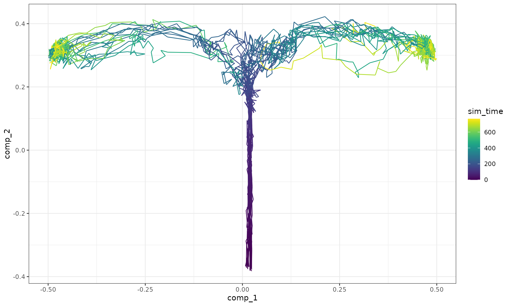
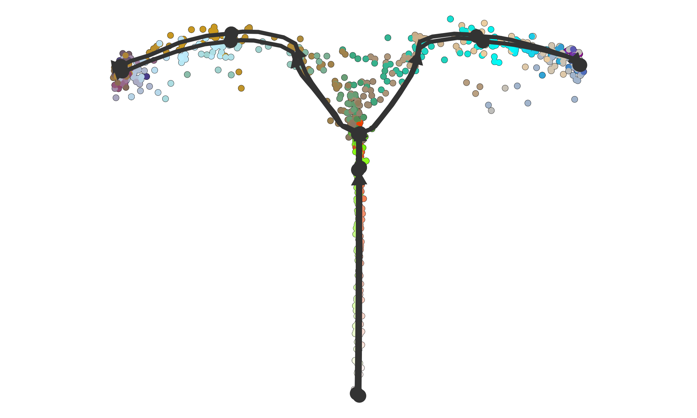
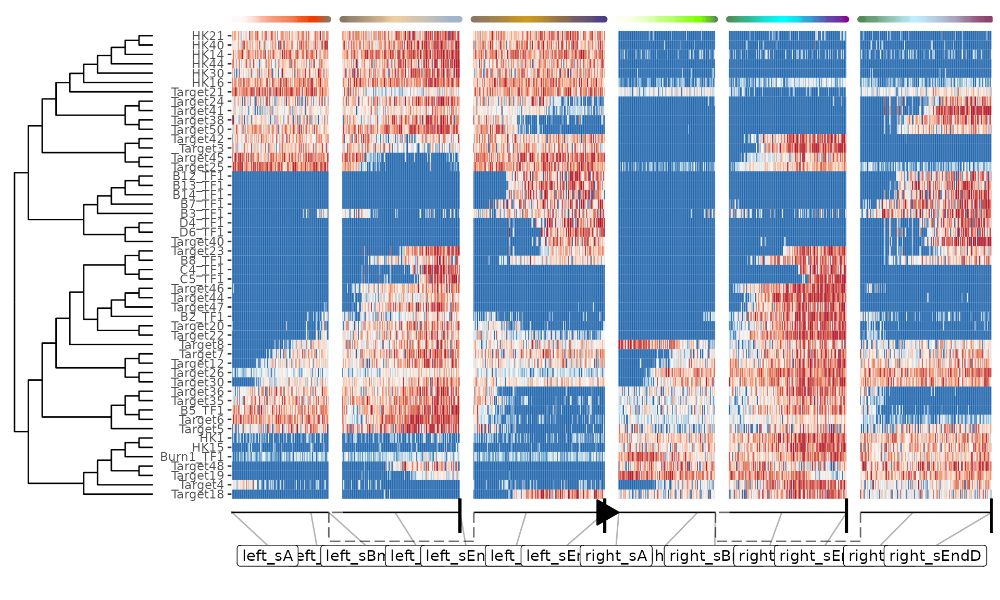

vignettes/advanced_topics/simulating_batch_effects.Rmd
simulating_batch_effects.RmdAn easy way of simulating batch effects is by performing multiple dyngen runs, but with different kinetics. dyngen samples the GRN kinetics randomly from a set of predefined distributions (See ?generate_kinetics).
First, create the ‘common’ part of the dyngen simulation as follows. This will ensure that the gene regulatory network-part of the simulation is exactly the same.
library(tidyverse)
library(dyngen)
set.seed(1)
backbone <- backbone_bifurcating()
config <-
initialise_model(
backbone = backbone,
num_cells = 1000,
num_tfs = nrow(backbone$module_info),
num_targets = 250,
num_hks = 250,
simulation_params = simulation_default(
census_interval = 10,
ssa_algorithm = ssa_etl(tau = 300 / 3600),
experiment_params = simulation_type_wild_type(num_simulations = 100)
)
)
# the simulation is being sped up because rendering all vignettes with one core
# for pkgdown can otherwise take a very long time
set.seed(1)
config <-
initialise_model(
backbone = backbone,
num_cells = 1000,
num_tfs = nrow(backbone$module_info),
num_targets = 50,
num_hks = 50,
verbose = interactive(),
download_cache_dir = tools::R_user_dir("dyngen", "data"),
simulation_params = simulation_default(
census_interval = 5,
ssa_algorithm = ssa_etl(tau = .01),
experiment_params = simulation_type_wild_type(num_simulations = 10)
)
)
model_common <-
config %>%
generate_tf_network() %>%
generate_feature_network()Now you can run the simulation multiple times. Note that for each separate run, the generate_kinetics() step ensures that the thermodynamic parameters will be different (yet drawn from the same distribution). Some values for the kinetics of the main transcription factors are not changed, to ensure that the desired dynamic process is obtained.
model_a <- model_common %>%
generate_kinetics() %>%
generate_gold_standard() %>%
generate_cells()
model_b <- model_common %>%
generate_kinetics() %>%
generate_gold_standard() %>%
generate_cells()The differences if kinetics parameters can be visualised as follows.
params_a <-
dyngen:::.kinetics_extract_parameters_as_df(model_a$feature_info, model_a$feature_network) %>%
select(id, group = param, model_a = value)
params_b <-
dyngen:::.kinetics_extract_parameters_as_df(model_b$feature_info, model_b$feature_network) %>%
select(id, group = param, model_b = value)
params_ab <-
inner_join(params_a, params_b, by = c("id", "group"))
ggplot(params_ab) +
geom_point(aes(model_a, model_b, colour = group)) +
facet_wrap(~group, scales = "free") +
theme_bw()Finally, combine the simulations as follows.
model_ab <-
combine_models(list(left = model_a, right = model_b)) %>%
generate_experiment()Show a dimensionality reduction.
plot_simulations(model_ab)
plot_gold_mappings(model_ab, do_facet = FALSE)Visualise the dataset using dyno.
## Loading required package: dynfeature## Loading required package: dynguidelines## Loading required package: dynmethods## Loading required package: dynplot## Loading required package: dynwrap
dataset <- as_dyno(model_ab)
plot_dimred(dataset)## Coloring by milestone## Using milestone_percentages from trajectory
plot_heatmap(dataset, features_oi = 50)## No features of interest provided, selecting the top 50 features automatically## Using dynfeature for selecting the top 50 features## Warning: `as_data_frame()` was deprecated in tibble 2.0.0.
## Please use `as_tibble()` instead.
## The signature and semantics have changed, see `?as_tibble`.## Warning: `data_frame()` was deprecated in tibble 1.1.0.
## Please use `tibble()` instead.## Warning: 'correlation_distance' is deprecated.
## Use 'calculate_distance' instead.
## See help("Deprecated")## root cell or milestone not provided, trying first outgoing milestone_id## Using 'left_sA' as root## Coloring by milestone
It’s definitely possible to think of different ways of simulating batch effects. For instance, you could implement a different strategy for changing the kinetics parameters between runs. You could also change the gene regulatory network itself, e.g. by changing the effect of some of the edges, or changing the targets of certain regulators.
If you come up with something, feel free to let us know on GitHub!